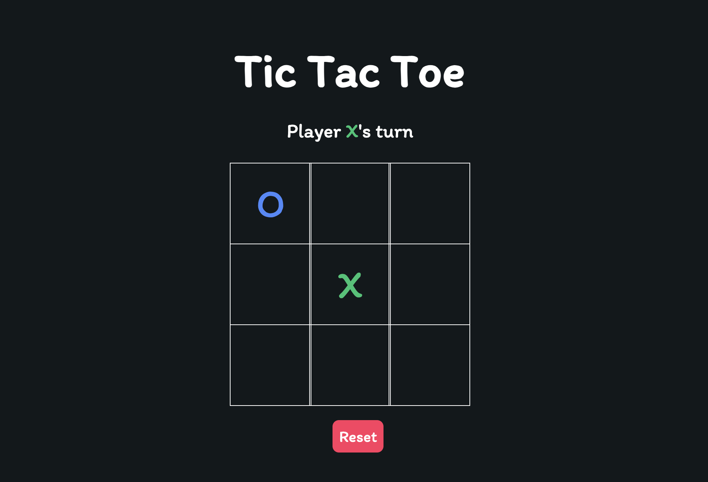

About Me
I am James Choi, a student studying Computer Science at Western University,
pursuing my passion of software development. As the fascination
of tech submerged me, my efforts have shifted to gaining more knowledge and
experience in my desired industry.
With the mindset of striving to learn everything possible throughout my career, I look forward to
demonstrating my outstanding skills in organization, teamwork efficiency, critical thinking,
and problem solving.
My Projects

Classic game of Tic Tac Toe created using HTML, CSS, and Javascript.
All game logic is stored inside index.js, a javascript file to determine win conditions, board positions, and turn logic.
All game appearance implemented using style.css file in combination with index.html file.
Clone of the popular New York Times minigame - Wordle.
Implemented in Python using flet UI framework.
All game logic stored inside wordle.py including random word selection, string manipulation, user input conditions, and UI implementation.
This file accesses a "words.txt" file - dictionary of all valid five letter words.
Multiplayer Snake Game created in Python using pygame and TCP client-server connections.
All game logic stored inside snake.py, accessed by snake_server.py to host a TCP server.
Clients join the server using snake_client.py and communicate with the server regarding the user chat room and game state information.
snake_client.py implementes UI and game controls.